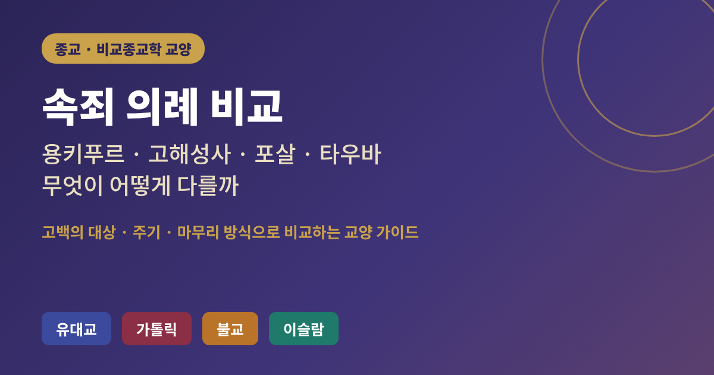
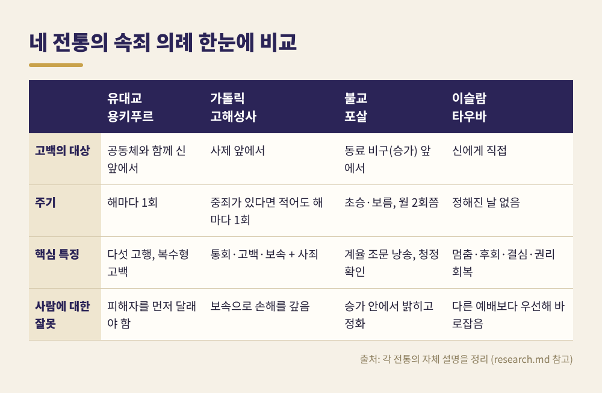
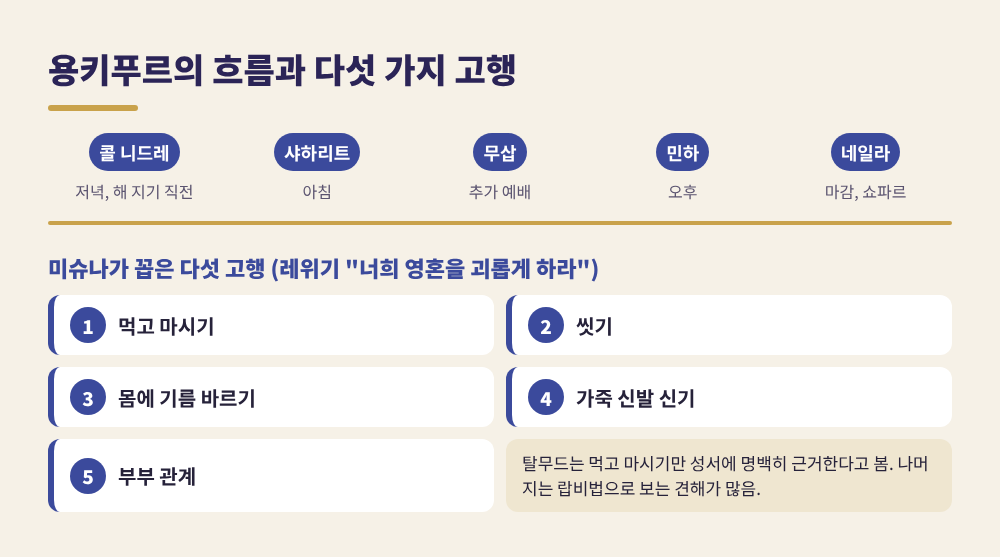
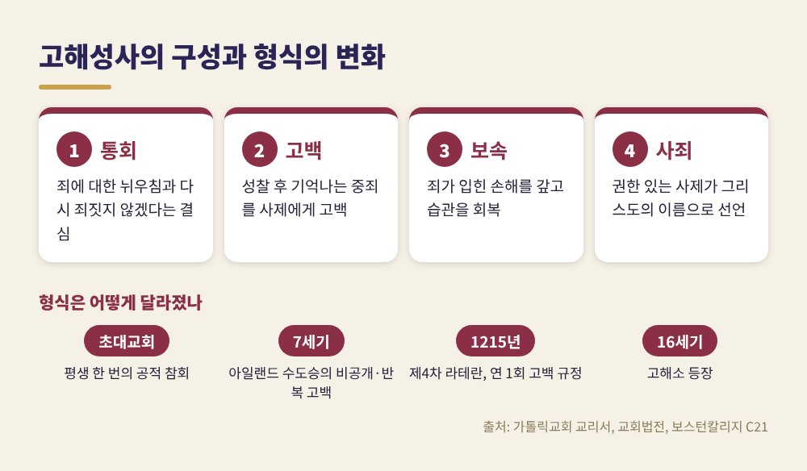
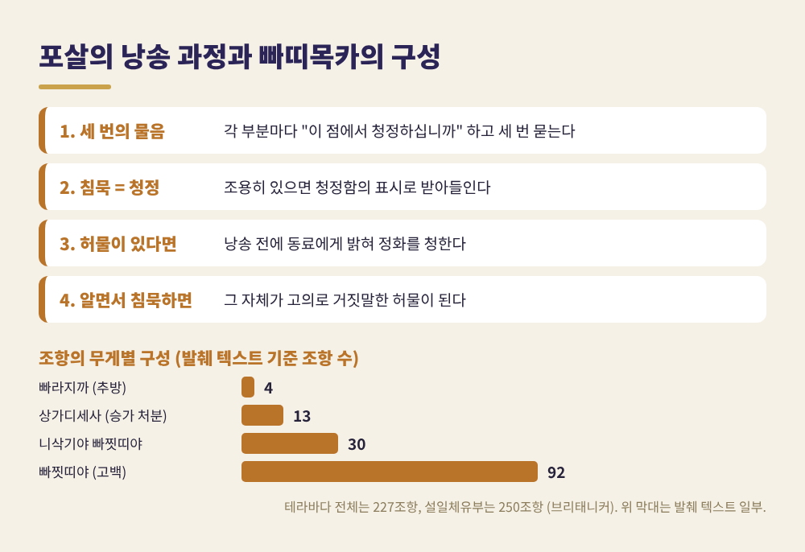
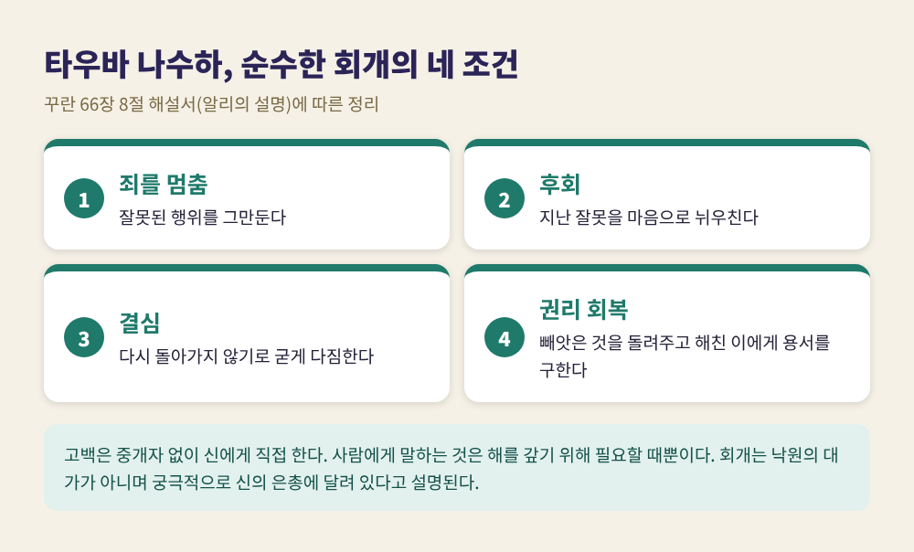
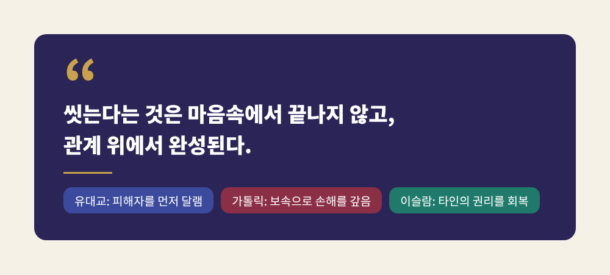

속죄 의례 비교, 용키푸르·고해성사·포살·타우바는 무엇이 어떻게 다를까

오늘은 허물을 씻어 내는 네 가지 의례를 비교해 보려 합니다. 유대교의 용키푸르, 가톨릭의 고해성사, 불교의 포살, 이슬람의 타우바입니다.
한 줄로 요약하면 이렇습니다. 네 전통 모두 잘못을 인정하고 돌아서라고 말하지만, 누구 앞에서 하는지, 얼마나 자주 하는지, 무엇으로 마무리하는지가 서로 다릅니다. 이 글은 어느 전통이 옳은지를 가리지 않습니다. 각 전통이 스스로를 어떻게 설명하는지를 따라가 보겠습니다.
■ 먼저 눈에 띄는 공통점과 차이

표로 먼저 보시면 윤곽이 잡힙니다. 고백의 대상이 가장 크게 갈립니다. 유대교는 공동체와 함께 신 앞에서, 가톨릭은 사제 앞에서, 불교 승가는 동료 승려 앞에서, 이슬람은 신 앞에서 직접 말합니다.
주기도 다릅니다. 용키푸르는 해마다 한 번, 포살은 한 달에 두 번쯤, 가톨릭은 중죄가 있다면 적어도 해마다 한 번입니다. 타우바에는 정해진 날이 없습니다. 죄를 깨닫는 순간이 곧 시작입니다.
반대로 겹치는 지점도 분명합니다. 이 부분은 뒤에서 다시 다루겠습니다.
■ 유대교, 하루를 통째로 비우는 용키푸르
용키푸르(속죄일)는 새해 로시 하샤나로부터 9일 뒤에 찾아옵니다. 이 열흘을 '두려운 날들'이라 부르고, 속죄일이 그 끝입니다. 해 지기 직전 콜 니드레('모든 서원')로 시작해 다음 날 밤, 하늘의 문이 닫힌다는 뜻의 네일라와 긴 쇼파르 소리로 마칩니다. 그 사이 저녁, 아침, 무삽, 오후, 마감까지 다섯 차례의 예배가 이어집니다.
이날의 특징은 몸으로 하는 '고행'입니다. 미슈나는 다섯 가지를 꼽습니다. 먹고 마시기, 씻기, 몸에 기름 바르기, 가죽 신발 신기, 부부 관계입니다. 근거는 레위기의 "너희 영혼을 괴롭게 하라"입니다. 흥미로운 점은 랍비들의 논쟁입니다. 탈무드는 먹고 마시기만 성서에 분명히 근거한다고 보았고, 나머지 넷은 랍비법으로 보는 견해가 많습니다. 한편 불편함이 목적이 아니라 몸의 일상에서 물러나는 안식의 연장이라는 해석도 있습니다.
고백 기도 비두이는 히브리어 알파벳 순서대로 죄목을 늘어놓습니다. 주어가 "저는"이 아니라 "우리는"이라는 점이 특징입니다. 누구도 모든 죄를 짓지는 않았지만 공동체가 함께 책임을 진다는 뜻으로 읽힙니다. 가슴을 두드리며 낭송하는 전통도 있습니다.
이 의례의 가장 중요한 원리는 미슈나 요마 8장 9절에 있습니다. 속죄일은 사람이 신에게 지은 죄만 속죄합니다. 이웃에게 지은 죄는, 피해자를 먼저 달래기 전에는 속죄되지 않습니다. 콜 니드레도 사람 사이의 약속을 취소해 주지 않습니다. 하늘의 용서보다 사람 사이의 화해가 먼저인 셈입니다.
또 하나, "죄를 짓고 속죄일이 해결해 주겠지" 하는 계산은 통하지 않는다고 같은 미슈나가 못 박습니다. 랍비 아키바는 반대로 이렇게 위로했다고 전해집니다. 정결례 물웅덩이가 부정한 이를 씻듯, 신이 직접 이스라엘을 씻어 주신다는 것입니다.

■ 가톨릭, 사제 앞에서 완결되는 고해성사
가톨릭에서는 이 의례를 고해성사, 또는 화해의 성사라고 부릅니다. 교회는 요한복음 20장의 "너희가 누구의 죄든 용서해 주면 용서될 것이다"를 근거로 이를 그리스도가 세우신 성사로 설명합니다.
교리서는 고백하는 이의 행위를 셋으로 나눕니다. 통회, 고백, 보속입니다. 통회는 죄에 대한 뉘우침과 다시 죄짓지 않겠다는 결심입니다. 하느님을 사랑하는 마음에서 나오면 완전통회, 그 밖의 동기에서 나오면 불완전통회라 합니다. 고백은 성찰 후 기억나는 중죄를 사제에게 말하는 일입니다. 소죄는 필수는 아니고 권장됩니다. 보속은 사제가 정해 주는 행위로, 죄가 입힌 손해를 갚고 제자다운 습관을 되찾는 과정입니다. 여기에 사제의 사죄가 더해져 성사가 완성됩니다.
교회법은 두 가지를 분명히 해 둡니다. 먼저 분별 연령에 이른 신자는 중죄를 적어도 해마다 한 번 고백할 의무가 있습니다(제989조). 다음으로 '성사적 봉인'은 불가침입니다. 고해 사제는 어떤 이유로도 들은 죄를 누설할 수 없고, 통역처럼 우연히 알게 된 사람도 비밀을 지켜야 합니다(제983조).
이 형식은 처음부터 같지 않았습니다. 초대교회에는 평생 한 번만 받을 수 있는 공적 참회가 있었습니다. 주교에게 고백한 뒤 수년간 거친 베옷을 입고, 미사 중 강론 뒤에는 자리를 떠나고, 성체를 받지 못하다가 화해에 이르는 길이었습니다. 7세기에 아일랜드 수도승들이 대륙으로 건너가며 비공개로, 여러 번 반복할 수 있는 고백을 들여왔습니다. 이들은 죄의 경중과 신분에 따라 참회의 '요율'을 적은 규정서를 쓰기도 했습니다. 처음에 대륙의 주교들은 이를 전통에서의 위험한 이탈로 여겼다고 합니다.
1215년 제4차 라테란 공의회의 제21조는 모든 신자가 적어도 해마다 한 번 자기 본당 사제에게 죄를 고백하라고 규정했습니다. 다만 이 조항이 새로운 발명이라고는 말하기 어렵습니다. 기존의 법과 관행을 대체로 확인한 것이어서, 최초의 의무라고 인용하는 것은 오류라는 지적이 있습니다. 반면 이 공의회가 고백의 형식을 사적 고백으로 못 박은 분기점이라고 보는 설명도 있습니다. 두 견해를 함께 알아 두시면 좋겠습니다. 고해소가 등장한 것은 16세기 반종교개혁기라고 합니다.

■ 불교, 동료 앞에서 청정을 확인하는 포살
불교의 포살(우뽀사타)은 개인의 참회보다 승가 공동체의 점검에 가깝습니다. 포살일은 초승과 보름이어서 한 달에 두 번쯤 돌아옵니다. 이날 비구들은 격주 고백을 하고 빠띠목카, 곧 계율 조문을 함께 낭송합니다.
테라바다 전통의 빠띠목카는 227개 조항입니다. 산스크리트로 전해진 설일체유부는 250개 조항이고, 중국과 일본에서는 현지에 맞지 않는 조항을 빼기도 해서 종파와 사찰마다 달랐습니다. 조항은 무게 순으로 배열됩니다. 승단에서 영구 추방되는 중대한 위반이 맨 앞에 있고, 고백만으로 끝나는 가벼운 위반이 뒤에 있습니다. 빠라지까 4조항, 상가디세사 13조항, 빠찟띠야 92조항 등으로 나뉩니다.
낭송의 구조가 인상적입니다. 각 부분을 읽을 때마다 "이 점에서 청정하십니까" 하고 세 번 묻습니다. 침묵은 청정하다는 표시로 받아들여집니다. 죄를 기억하면서도 세 번 묻는 동안 입을 닫으면 그 자체가 고의로 거짓말한 허물이 됩니다. 그래서 허물이 있는 비구는 낭송 전에 동료에게 밝혀 정화를 청합니다. 밝히면 마음이 편해진다고 텍스트는 말합니다. 중한 상가디세사를 숨겼다면 숨긴 날수만큼 별도의 수행 기간을 거쳐야 합니다.
재가 신자의 포살은 결이 다릅니다. 이날 팔계를 지키고 사찰에서 공양과 법문, 명상으로 하루를 보냅니다. 또 우안거가 끝나는 날은 자자(pavāraṇā)일이라 해서 보통 10월경에 있습니다. 이어서 가사를 공양하는 카티나 의식이 열립니다.

■ 이슬람, 중개자 없이 직접 돌아서는 타우바
타우바는 아랍어로 '돌아섬'을 뜻합니다. 한 해설은 영어의 '회개'가 내면의 상태를 가리키는 데 비해, 타우바는 과거 잘못의 결과를 줄이는 행동까지 요구한다고 설명합니다. 또 쌍방향이라는 점이 눈에 띕니다. 피조물이 하느님께 돌아서는 즉시 하느님도 그에게 돌아서신다고 전해집니다.
고백은 사람 중개자 없이 하느님께 직접 합니다. 사람에게 말해야 하는 경우는 해를 갚기 위해 필요할 때뿐입니다. 죄는 대체로 사적인 일로 둡니다. 용서를 구하는 말은 이스티그파르라고 합니다. 죄를 지은 직후에도 하고, 알지 못하는 죄에 대비해 날마다 외우기도 합니다.
꾸란 66장 8절의 '타우바 나수하'(순수한 회개)는 해설서에서 네 조건으로 풀립니다. 죄를 멈추고, 지난 일을 후회하고, 다시 돌아가지 않기로 굳게 결심하고, 타인의 권리를 돌려주는 것입니다. 빼앗은 것은 반환하고, 말이나 행동으로 해친 이에게는 용서를 구해야 합니다. '나수흐'라는 말에는 순수하다는 뜻과 찢어진 옷을 깁는다는 뜻이 함께 있다고 합니다.
여기서도 사람에 대한 잘못이 우선입니다. 한 해설은 이를 바로잡는 일이 다른 예배보다도 절대적으로 앞선다고 설명합니다. 한편 회개가 낙원의 대가인 것은 아니며, 궁극적으로는 하느님의 은총에 달려 있다는 점도 함께 강조됩니다.

■ 네 전통을 나란히 놓고 보면
차이는 세 갈래로 정리됩니다. 첫째, 중개자입니다. 가톨릭은 사죄를 선언하는 사제가 있고, 이슬람은 직접 하느님께 향합니다. 유대교에서는 공동체 전체가 복수형으로 고백하며, 불교 승가는 동료 승려가 증인이 됩니다. 둘째, 시간입니다. 해마다 한 번 하루를 비우는 날이 있고, 달마다 두 번 반복되는 의례가 있으며, 정해진 날이 없는 상시적 태도도 있습니다. 셋째, 고백이 비밀인가 공개인가입니다. 가톨릭은 봉인으로 철저히 지키고, 유대교는 집단적이고, 승가는 공동체 앞에서 이뤄지며, 이슬람은 대체로 사적입니다.
공통점은 더 조용합니다. 유대교, 이슬람, 그리고 가톨릭의 보속은 모두 사람에게 끼친 해를 갚는 일을 포함합니다. 마음만으로 끝내지 않고 관계를 고치라고 요구합니다. 그리고 네 전통 모두 다음 행동의 변화, 곧 '돌아섬'을 핵심에 둡니다.
다만 한계도 인정해야 합니다. 이 글은 각 전통 안의 모든 갈래를 다루지 못했습니다. 종파와 지역에 따라 실천이 상당히 다르고, 같은 용어도 신학적으로 다르게 설명됩니다. 여기서는 공통으로 인용되는 기본 설명만 정리했습니다.
정리하면 이렇습니다. 허물을 씻는 방법은 서로 달라도, 사람 사이의 잘못을 사람에게 먼저 풀어 내라는 목소리는 여러 전통에서 겹쳐 들립니다.

"씻는다는 것은 마음속에서 끝나지 않고, 관계 위에서 완성된다."
비교해 보면 낯선 의례도 조금은 가까워집니다. 다음에 어느 전통의 속죄 의례를 마주하신다면, 누구 앞에서 무엇을 내려놓는지를 먼저 살펴보시길 권합니다.